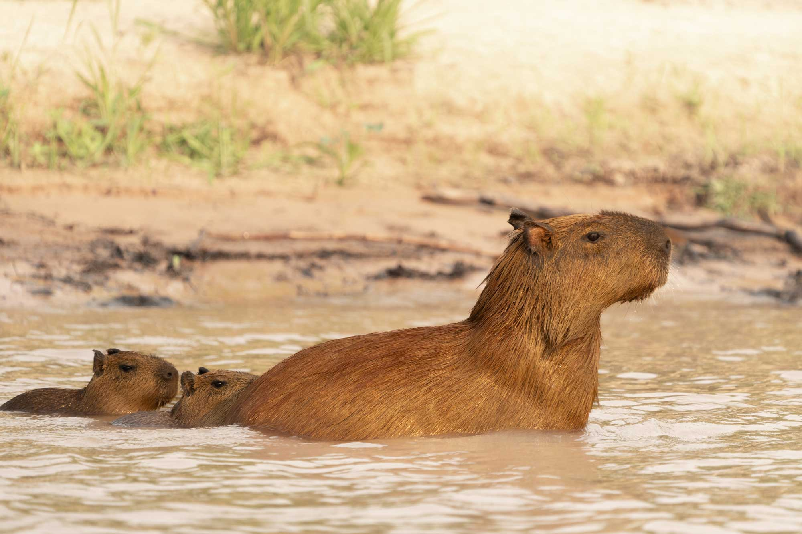
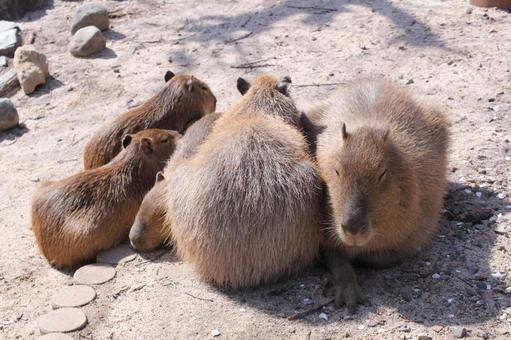
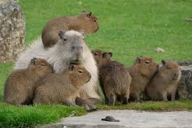

9 Reasons Why Capybaras Are Awesome

Super Social
Capybaras live in groups of 10–20, enjoying the company of family and friends, often bonding with other species!

Excellent Swimmers
With webbed feet and a love for water, capybaras can swim and dive underwater for up to five minutes.

Zen Masters
Known for their calm demeanor, they are often seen relaxing and grooming each other to strengthen bonds.

Animal Friends
Capybaras are famous for friendships with animals like birds, monkeys, and even cats—no drama here!

Herbivores Extraordinaire
They mainly eat grasses and aquatic plants, and even practice coprophagy to digest food twice for maximum nutrients.

Built for Water & Land
Capybaras are semi-aquatic and have eyes, ears, and nostrils positioned high on their heads for easy surface breathing.

Strong Family Bonds
The young stay close to their mothers and the group, learning important survival and social skills together.

Natural Smile
With their expressive faces and friendly personalities, capybaras easily win hearts worldwide.

Thermoregulators
Capybaras regulate their body temperature by soaking in water or mud, keeping cool during hot days.